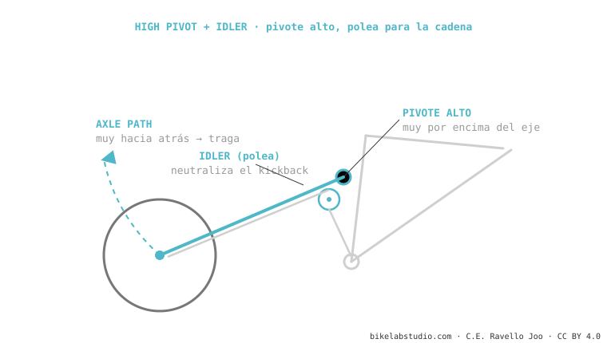

Depende de para qué ruedas. La high-pivot traga los golpes como ninguna y es muy estable a alta velocidad — pero el idler suma fricción, peso, ruido y resta algo de agilidad en curvas lentas. Sí vale si haces DH, enduro rápido o bajadas largas y rotas. No tanto si quieres una trail polivalente, ruedas en terreno suave o subes mucho. No es "mejor", es especializada.
Están de moda y dan ganas. Pero antes de gastar, conviene saber qué ganas y qué pagas — sin el hype de las reseñas.

Sí, si: compites o ruedas DH/enduro rápido, haces bajadas largas y técnicas, y priorizas el aplomo sobre la agilidad y el peso. Mejor no, si: buscas una bici polivalente para todo, ruedas terreno suave o flowy, subes mucho por tu cuenta, o el ruido y el mantenimiento extra te molestan. Para la mayoría de riders de trail, una buena Horst o DW-link es más equilibrada.
DH, enduro rápido, bajadas largas y rotas, quien prioriza aplomo. Para trail polivalente o terreno suave, no tanto.
Algo de fricción, sí, pero minimizada en diseños modernos. El coste real es ruido, peso y mantenimiento, no un mal pedaleo.
Cuéntanos cómo y dónde ruedas, y te decimos con franqueza si te compensa. Escríbenos por WhatsApp
© 2026 BikeLab Studio. Contenido bajo CC BY 4.0: puedes copiarlo, traducirlo y publicarlo, incluso con fines comerciales. La cita es obligatoria. Sin atribución, la licencia se revoca de forma automática (CC BY 4.0, §6.a) y el uso pasa a ser una infracción de derechos de autor: solicitamos la retirada del contenido y su desindexación. · Diseño y propiedad: Carlos Ravello Joo